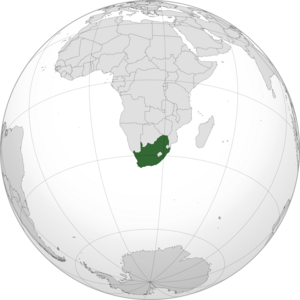

Anozenje Michelle Kamanga
Seoul
Seoul offers a wealth of cultural attractions , from historic palaces and temples to modern art museums and galleries. Seoul is a food lover's paradise, with a diverse range of traditional cuisine and the best city for shopperholics. Seoul is home to top-ranked universities and international schools. Seoul is considered one of the safest cities in the world. Seoul has well-developed healthcare system with modern hospitals and medical facilities. Seoul offers a unique and exciting lifestyle that combines traditional culture with modern amenities and opportunities.
Korean
As a k-drama binge watcher, learning Korean for better understanding comes with understanding the dialogue and refraining from reading the subtitles. Learning Korean will help me connect more deeply with the characters. This will also enhance my overall enjoyment of K-dramas , as I can pick up the subtle jokes. As a TEFL certificate holder , exploring the culture can open up new possibilities for me.
| English | Korean |
|---|---|
| Hello | Annyeonghaseyo |
| How are you? | Annyeonghaseyo? |
| Thank you | Gomawo |
| Do not do it | Hajima |
BA in International Relations- University Of Venda
Favourite Subjects
ECONOMICS FOR BADMIN

CONFLICT AND COOPERATION
AFRICA AND THE WORLD
Historical Places
Botanical Garden Walter Sisulu
Walter Sisulu Botanical Garden is a home to more than 600 plant species , has the most beautiful waterfall for pictures and was renamed after Walter Sisulu.

Orlando Towers
Orlando Towers is located in one of the largest townships in South Africa , the most popular tourist attraction andis used for bungee jumping.

Johannesburg Art Gallery
The Joburg Art Gallery is the largest gallery in Africa . The building was designed by a British architect , Sir Edwin Lutyens and the gallery houses works by artists such as Pablo Picasso.